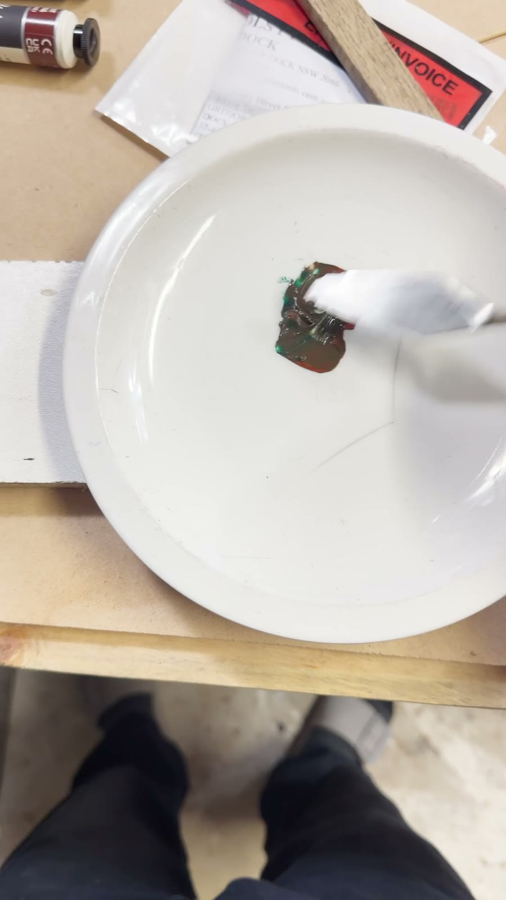

If you repair antique furniture—even as a side gig—you probably know the moment.
You fix the joinery, stabilise the veneer or glue the loose leg. The structural work is done.
Then comes the colour match.
I came to furniture repair through woodworking, not painting. Working with timber felt familiar. Mixing a colour to blend into an existing finish was a different story.
With my limited colour-mixing experience, I could spend hours mixing, testing and starting again. I'd make a small adjustment, find I'd gone too far, and try another batch. All the while, I was conscious of disturbing the surrounding finish as I removed unsuccessful attempts.
That frustration is why I built Touch-Up Mixer.
Why furniture repairs made colour matching difficult for me
An off-the-shelf stain can be a useful starting point for familiar wood tones. But the repairs I wanted to tackle weren't always a straightforward oak, teak or walnut colour.
Painted furniture introduces a different palette. Marble tops can include whites, greys, browns and purples. Older finishes have variations in colour, grain and patina that make it difficult to decide what to mix first.
There may be several colours to work towards within a small area: a background tone, a darker grain line or a lighter detail. Getting one flat colour close is only part of making the repair blend in.
An experienced colour mixer may know instinctively where to start. I didn't have that experience, and the trial and error cost me time and materials.
The tool I wanted on my bench
I wanted a way to turn a colour in a photograph into a suggested starting mix using the materials I already owned.
That meant thinking about furniture repair materials as well as paint: stains, shellac tints, wax and filler sticks, putty and pigments. It also meant keeping the surrounding finish and the damaged area separate when sampling a photo.
The question I wanted help with was simple: what should I try mixing first?
Touch-Up Mixer grew from that question. It gives me a starting point I can test, adjust and learn from as I work.


How I use Touch-Up Mixer
The workflow follows the repair:
- Photograph the area. Capture the repair and the surrounding finish you want it to blend into.
- Choose what to sample. Use the good surrounding colour as the reference, marking the repair area and excluding distractions such as glare or hardware.
- Choose a palette. Work from the colours and repair medium you actually have available.
- Get a suggested starting mix. Use the recipe as the first mixture to test.
- Test, adjust and keep notes. Check the real result, refine it as needed and save the repair details for later.
With Touch-Up Mixer, I can usually get to a useful starting mix in about five minutes. For me, that has made a big difference compared with the hours I could spend finding my way there through trial and error.
That is time to a starting mix. Testing and adjustment still matter. Lighting, drying, sheen, texture and the material underneath all affect how the repair looks. Transparent stains and tints also behave differently from opaque paint.
I still need to judge the result on the real surface, and some repairs need several tones or layers. Having a starting point makes that work feel more manageable.
For the practical steps, read the guide to matching a paint colour from a photo.
A way to remember what worked
I also wanted to keep useful information with the repair: the photo, palette, suggested mixes and notes. Those details give me something to return to instead of relying on memory.
The free app includes photo sampling, suggested mixes, Check Mix and a limited library of saved repairs and palettes. Pro adds more capacity, job organisation and export tools. The Touch-Up Mixer page has the full Free and Pro details.
Photos and repair records stay on your device unless you choose to share an export. The app does not require an account.
What I'm exploring next
There is more I want to improve, particularly how the app handles surfaces with varied colours and textures. I'm also exploring ways to account for colour changes as paint dries.
Those are areas for further work. For now, the app already helps me with the problem that started it: choosing a useful first mix when colour matching doesn't come naturally.
Try it on your next repair
You can watch the Touch-Up Mixer demo on YouTube or download Touch-Up Mixer on the App Store.
If you try it, I'd love to hear what worked and where you got stuck. This is a tool built from my own repair experience, and feedback helps me decide what to improve next. You can get in touch through Touch-Up Mixer support.